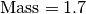

T2 - Masses¶
Legend¶
This page details, for each solid (S) of a robot, the Mass, Center of Mass and Inertial matrix.

![\text{CoM(S)} = \left[\begin{array}{c}
X_G \\ Y_G \\ Z_G
\end{array} \right]_{(o, R)} \text{(m)}](../../_images/math/c10f44e2029ff9389e41eed6a5f380c4ba542843.png)
![\left[I_o(S)\right]_R = \left[\begin{array}{ccc}
I_{xx} & I_{xy} & I_{xz} \\
I_{yx} & I_{yy} & I_{yz} \\
I_{zx} & I_{zy} & I_{zz}
\end{array}\right]_R (\text{kg}*\text{m}^2)](../../_images/math/00ce03166e8c671b404f890782379858e282c886.png)
The Center of Mass position and the Inertial matrix are described relative to the local coordinate system of the current solid (S) (o, R).
All solids (S) and local coordinate system are described relative to the zero posture: with straight arms pointing forwards.
Whole robot¶



![\text{CoM(S)} = \left[
\begin{array}{c}
-0.00001 \\
0.00014 \\
-0.02742
\end{array}
\right]_{(o, R)}](../../_images/math/14280028ca21c76734f9c8f849f2bb1ca0896955.png)
![\left[I_o(S)\right]_R = \left[
\begin{array}{ccc}
+0.00007499295 & +0.00000000157 & -0.00000001834 \\
+0.00000000157 & +0.00007599995 & -0.00000005295 \\
-0.00000001834 & -0.00000005295 & +0.00000553373 \\
\end{array}
\right]_R](../../_images/math/a0b1fedbd279237f53a6b06925260bb363dc378d.png)


![\text{CoM(S)} = \left[
\begin{array}{c}
-0.00112 \\
0.00003 \\
0.05258
\end{array}
\right]_{(o, R)}](../../_images/math/740e5a537a6af045a9780972eaca0f23c94bca31.png)
![\left[I_o(S)\right]_R = \left[
\begin{array}{ccc}
+0.00263129518 & +0.00000878814 & +0.00004098466 \\
+0.00000878814 & +0.00249112488 & -0.00002995792 \\
+0.00004098466 & -0.00002995792 & +0.00098573565 \\
\end{array}
\right]_R](../../_images/math/41d65c66f1b8664e254bc2152d3d2f292456c589.png)